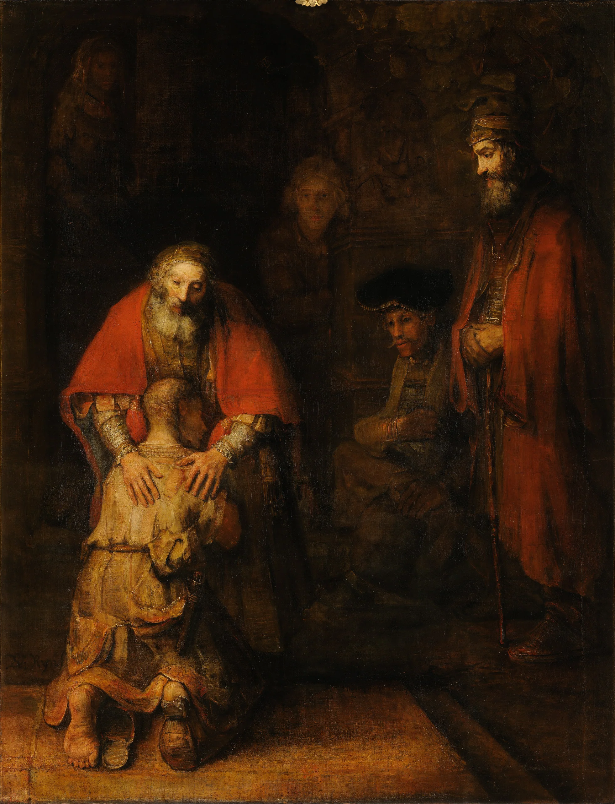
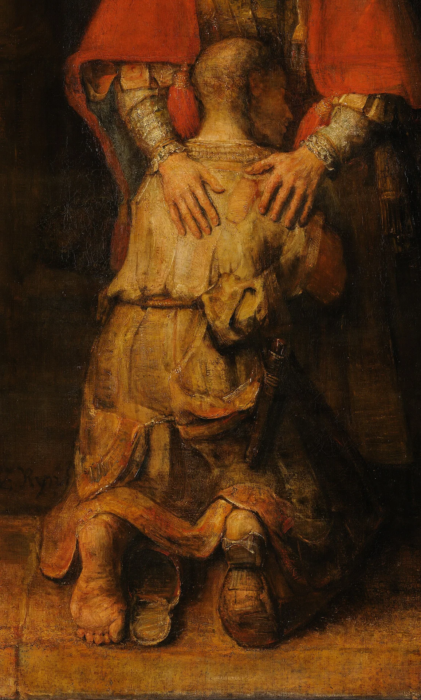
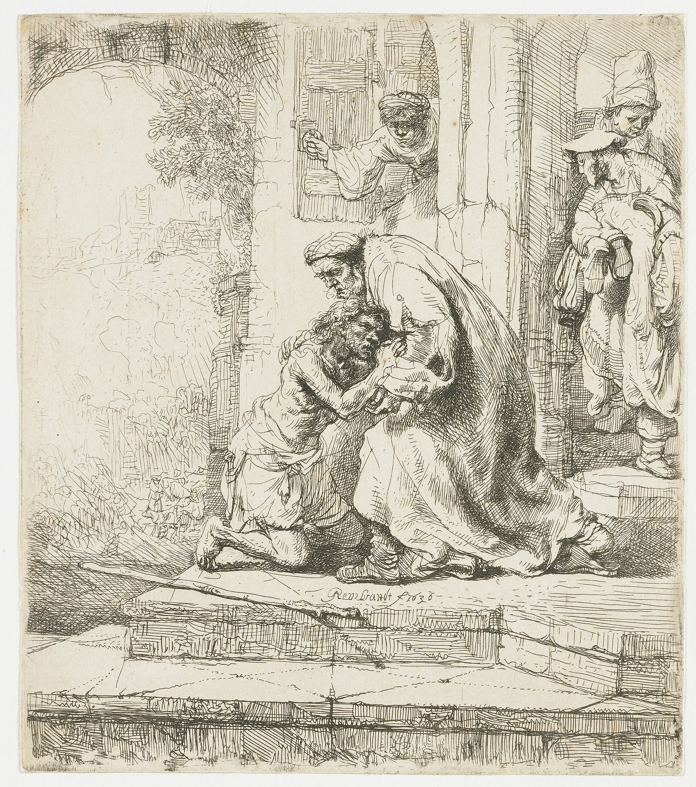
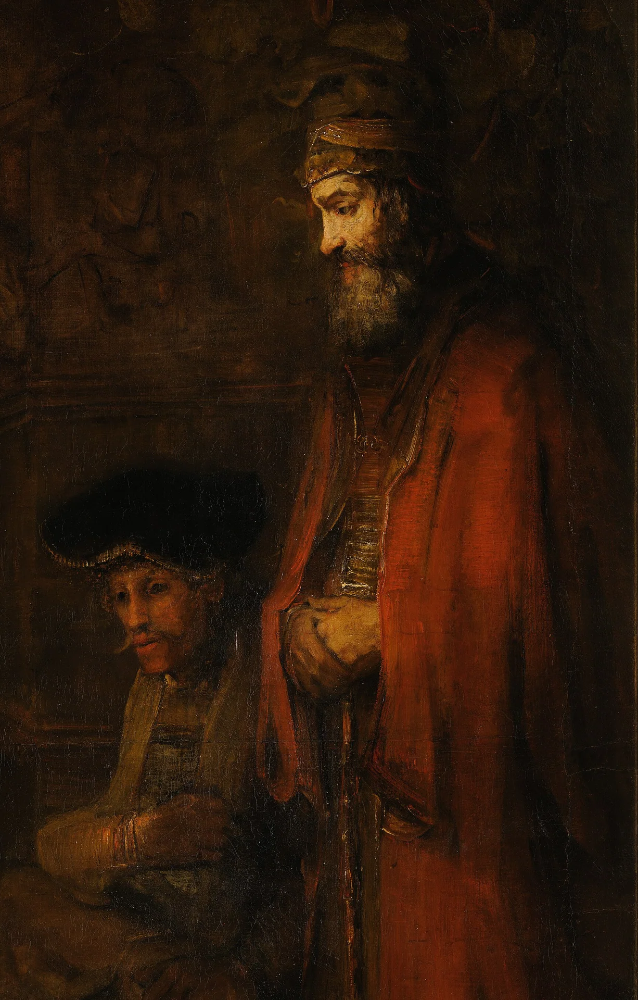

아직 펼치지 않은 카드그림 속 손 · 3탕자의 귀향다 잃고 돌아온 아들, 아버지는 어떻게 했을까요?집을 떠났던 아들이 빈손으로 돌아왔어요. 아빠는 어떻게 했을까요?
1660년대네덜란드 암스테르담 · 지금은 러시아 상트페테르부르크 에르미타시 미술관
탕자의 귀향
1636년, 서른 살 무렵의 렘브란트는 집을 나가 재산을 탕진한 아들, 곧 탕자가 돌아오는 장면을 작은 판화에 새겼어요. 서른 해쯤 지나 늙은 그는 같은 장면을 사람 키보다 큰 화폭에 다시 그렸어요. 큰 그림 속에 숨은 손과 얼굴을 하나씩 찾아보세요.
집을 나갔던 아들이 빈손으로 돌아왔어. 아빠는 아들 등에 두 손을 살며시 얹었대. 큰 그림 속에 숨은 손을 같이 찾아볼까?
검수 전 시안이에요(기준서 1판). 장면에는 누가복음 15장, 에르미타시·레이크스·테 파파 미술관의 설명, 1836년 존 스미스의 렘브란트 그림 목록, 헨리 나우웬의 책을 소개한 글에 있는 것만 옮겼어요. 기록이 서로 다른 곳은 ‘기록마다 다른 점’에 적었어요. 상상은 ‘눈 감고 상상해 보기’에만 썼어요.
시안 확인용카드 단계 미리 보기
1
누가복음 15장
신약성경 누가복음(예수의 삶을 적은 복음서 하나) 15장에서, 예수는 이런 이야기를 들려주었어요. 어떤 사람의 작은아들이 아버지에게 제 몫의 재산을 미리 받아 먼 나라로 떠났어요.
그는 재산을 함부로 써 버렸어요. 큰 흉년이 들자 남의 들에서 돼지를 기르며, 돼지가 먹는 열매로라도 배를 채우고 싶을 만큼 굶주렸어요.

아들은 집으로 돌아가 이렇게 말하기로 마음먹었어요. 이제 아들이라 불릴 자격이 없으니, 품꾼 가운데 하나로 받아 달라고요. 품꾼은 삯을 받고 남의 일을 해 주는 일꾼이에요(누가복음 15장 11~19절).
집을 나간 작은아들이 돈을 다 쓰고, 배가 고파서 돌아왔어.
물어보기집으로 돌아오는 길에 아들은 무슨 말을 연습했을까?
2
서른 해 뒤, 같은 이야기
1636년, 서른 살 무렵의 렘브란트는 이 장면을 판화로 새겼어요. 동판에 선을 새기고 잉크를 채워 종이에 찍어 내는 그림이에요. 세로 15.6cm로 엽서보다 조금 커요.
판화 속 아버지는 허리를 굽혀 아들을 안고, 아들은 아버지의 팔을 붙들어요. 오른쪽 문간에서는 새 옷을 든 사람들이 나와요. 아버지가 종들에게 가장 좋은 옷과 가락지와 신을 가져오라고 한 대목이에요(누가복음 15장 20~22절).

서른 해쯤 뒤, 렘브란트는 같은 이야기를 높이 2.6m의 화폭에 다시 그렸어요. 이번에는 모두가 멈춘 듯 고요해요. 아들의 얼굴은 아버지의 품에 묻혀 거의 보이지 않고, 아버지의 두 손이 아들의 등에 놓여 있어요.
판화의 구도는 90년쯤 앞선 화가 마르턴 반 헤임스케르크(Maarten van Heemskerck)가 같은 이야기를 나무판에 새긴 판화를 많이 본떴어요. 1656년 빚 때문에 적은 렘브란트의 살림 목록에도 헤임스케르크의 판화가 여럿 있어요.
렘브란트 아저씨는 같은 이야기를 젊을 때 한 번, 할아버지가 되어 또 한 번 그렸어.
물어보기두 그림에서 아빠는 아들을 어떻게 안아 주고 있어?
3
등에 얹은 두 손
1836년, 런던에서 그림을 사고팔던 존 스미스(John Smith)가 렘브란트의 그림 목록을 펴냈어요. 그는 이 그림 속 아버지가 두 손을 뉘우치는 아들의 어깨에 다정하게 얹었다고 적었어요. 그가 센 그림 속 사람은 모두 여섯이에요.
동그라미 일곱 개를 하나씩 눌러, 여섯 사람의 손과 얼굴, 아들의 칼과 신을 찾아보세요. ‘가까이 보기’로 크게 볼 수 있어요.
렘브란트, 「탕자의 귀향」, 1660년대 · 상트페테르부르크 에르미타시 미술관 · 렘브란트 그림 · 퍼블릭 도메인 · 위키미디어 공용(Google Art Project)
그림 위의 숫자나 아래 번호를 눌러 보세요.
여섯 사람을 모두 찾았어요. 펼친 손, 맞잡은 손, 어둠 속의 얼굴. 그림 속 손은 저마다 모양이 달라요.
에르미타시 미술관은 늙은 아버지가 눈물로 앞이 흐려진 채 아들을 용서한다고 설명해요. 그리고 그 모습을, 뉘우치는 사람을 모두 용서하는 하나님의 모습에 견주어요.
아빠의 두 손, 아들의 짧은 머리, 작은 칼, 벗겨진 신을 찾아보자.
물어보기그림에서 제일 먼저 찾은 손은 누구 손이야?
4
문 밖의 큰아들
누가복음에서 큰아들은 그때 밭에 있었어요. 집 가까이 와서 풍악(잔치 음악)과 춤추는 소리를 듣고 종에게 까닭을 물었어요. 동생이 돌아와 아버지가 살진 송아지를 잡아 잔치를 열었다는 말에, 그는 화가 나서 들어가려 하지 않았어요(누가복음 15장 25~28절).
1636년 판화에는 큰아들이 없어요. 서른 해 뒤의 그림에서는 붉은 망토를 두른 사람이 오른쪽에 서서 두 사람을 내려다봐요. 많은 사람이 이 사람을 큰아들로 봐요.

헨리 나우웬은, 렘브란트가 그 자리에 없던 큰아들을 그림에서 가장 눈에 띄는 자리에 세워 지켜보게 한 것은, 성경의 글자 그대로보다 이야기의 뜻을 따른 것이라고 보았어요.
밭에서 돌아와 잔치 소리를 들은 큰아들이라면, 어떻게 할까요?
형은 동생을 위한 잔치 소리를 듣고, 화가 나서 안 들어갔대.
물어보기네가 형이었다면 어떻게 했을까?
5
파리에서 상트페테르부르크로
렘브란트가 세상을 떠난 뒤 이 그림이 어디에 있었는지는 분명하지 않아요. 에르미타시 자료에 따르면 1766년까지는 파리의 카드루스 공작이 가지고 있었고, 그해 러시아의 여제 예카테리나 2세가 사들였어요.
예카테리나 2세는 1764년부터 겨울 궁전 곁에 황실의 그림을 모았어요. 이 소장품은 1852년, 니콜라이 1세가 에르미타시를 새로 꾸미면서 처음 일반 사람들에게 열렸어요.
누가복음의 이야기는 아버지의 대답에서 끝나요. 큰아들이 잔치에 들어갔는지는, 이야기도 그림도 말하지 않아요.
그림은 파리를 거쳐 멀리 러시아까지 갔어.
물어보기이 그림을 직접 보러 간다면 누구랑 같이 가고 싶어?
눈 감고 상상해 보기
암스테르담의 작업실. 늙은 화가가 큰 화폭 앞에 서서 붉은 물감을 두껍게 얹어요. 창으로 들어온 빛이 그림 속 아버지의 손등에 머물러요. 물감 냄새 속에서 화가는 붓을 내려놓고, 한참 동안 그 두 손을 바라봐요.
눈을 감아 봐. 누군가 두 손을 네 등에 살며시 얹어. 따뜻하지?
나의 자리
손을 얹은 아버지, 무릎 꿇은 아들, 지켜보는 사람들. 오늘의 나는 그림 어디쯤 있을까요?
잘못했을 때 누가 꼭 안아 준 적 있니? 그때 기분이 어땠어?
마음에 닿는 한 줄을 고르거나 직접 써 보세요. 한 줄을 남기면 이 자리의 도장이 찍혀요. 이 기기에만 저장돼요.
더 깊이
이야기를 보다 궁금해질 만한 것들이에요. 답을 읽거나 짧은 영화로 보세요.
아버지는 큰아들에게 뭐라고 대답했어요?
서른 해 사이, 렘브란트에게는 무슨 일이 있었어요?
뒷이야기
아직 펼치지 않은 이야기예요. 누르면 이야기가 펼쳐지고 색이 돌아와요. 더 알고 싶으면 근거를 따라가 보세요.
다 펼치면, 다음에 오실 때 새 이야기가 찾아와요.
오늘의 뒷이야기는 여기까지예요. 다음에 오시면 새 이야기가 기다리고 있어요.
펼친 뒷이야기 · 누르면 다시 볼 수 있어요
더 찾아보기
기록마다 다른 점
언제 그렸나 에르미타시 미술관의 소장품 정보는 1668년 무렵으로 적어요. 같은 미술관이 구글 아트 앤 컬처에 올린 설명은 1663~1665년으로, 네덜란드 미술사 연구소(RKD)는 1660년대로 적어요.
누가 그렸나 미술관은 렘브란트의 그림으로 소개해요. RKD는 ‘렘브란트 또는 그의 작업실’로 적어요. 작업실은 렘브란트의 화실에서 함께 일하던 제자와 조수들을 말해요.
러시아로 간 해 위키미디어 공용에 옮겨진 에르미타시 자료와 게티 연구소는 1766년, 구글 아트 앤 컬처의 에르미타시 설명은 1767년에 파리에서 사들였다고 적어요.
그 전의 길 1836년 스미스는 이 그림이 1742년의 한 소장품 경매와, 1764년 파리에서 열린 쾰른 선제후의 소장품 경매에 나온 그림일 수 있다고 적었어요. 스스로 ‘아마도’라고 밝혔어요. 선제후는 신성 로마 제국의 황제를 뽑는 권리를 가진 제후예요.
뒤쪽 사람들 스미스는 앉은 사람을 나이 든 여자로, 뒤쪽의 두 사람을 여자들로 적었어요. 나우웬은 앉은 사람을 집안일을 맡아보는 관리인으로 보았어요. 이들이 누구인지는 누가복음에 나오지 않아요.
직접 가 보기
확인한 날 · 2026년 11월 18일 · 바뀌기 쉬운 정보라 정기적으로 다시 확인해요
그림 러시아 상트페테르부르크 에르미타시 미술관에 있어요. 미술관은 겨울 궁전과 그 곁의 건물 여러 채로 이루어져요. 그림은 새 에르미타시 건물의 렘브란트 방(254번)에 걸려 있어요. 여는 날과 시간, 입장료는 미술관 누리집에서 확인해 주세요.
떠나기 전에 러시아로 떠나기 전에는 외교부 해외안전여행 누리집(0404.go.kr)에서 지금의 여행 경보와 주의 사항을 꼭 확인해 주세요.
1636년 판화 같은 동판에서 찍은 판화가 여러 미술관에 있어요. 암스테르담 레이크스 미술관 누리집에서 크게 볼 수 있어요.
그림 속 일곱 곳 찾기 금박
‘등에 얹은 두 손’ 장면에서 그림 속 일곱 곳을 모두 찾아 읽으면 카드에 금박이 입혀져요.
그림 속 일곱 곳을 모두 찾아 읽기
큰아들의 자리에서 채색
둘 가운데 하나만 해도 카드가 채색돼요.
큰아들의 자리에서 어떻게 할지 고르기
아이와 함께 ‘영화처럼 보기’를 끝까지 보기
근거 보기 (25)
- 대한성서공회 개역개정: 누가복음 15장 11~32절 — 작은아들의 분깃과 떠남, 흉년과 돼지, 품꾼으로 받아 달라는 말, 멀리서 알아보고 달려간 아버지, 좋은 옷·가락지·신, 밭에 있던 맏아들, 풍악 소리, 들어가려 하지 않음, 염소 새끼, 아버지의 대답
- 게티 연구소 CONA: Return of the Prodigal Son(에르미타시 ГЭ-742) — 1668년 무렵, 262×205cm, 1766년 에르미타시로 들어옴, ‘눈물로 눈이 흐려진’ 아버지와 뉘우치는 사람을 용서하는 하나님(에르미타시 설명), 렘브란트가 평생 이 이야기로 소묘·판화·그림을 남김
- 위키미디어 공용: 그림 정보(에르미타시 디지털 소장품 자료) — 1668년 무렵, 254번 방, 왼쪽 아래 서명 ‘R v Ryn f’, 1766년까지 파리의 카드루스 공작 앙드레조제프 당세쥔, 1766년 예카테리나 2세가 사들임, RKD ‘렘브란트 또는 작업실, 1660년대’
- 구글 아트 앤 컬처(에르미타시 미술관): Return of the Prodigal Son — 1663~1665년, 1767년 파리에서 예카테리나 2세를 위해 사들임, 고요와 침묵 속의 사랑과 자비
- 레이크스 미술관: RP-P-OB-164 — 1636년 판화, 156×136mm, 아들이 재산을 받아 탕진하고 돌아와 용서를 구함
- 레이크스 미술관: RP-P-1961-1039 — 같은 판화, ‘Rembrandt f 1636’ 서명, 집 앞 계단에 무릎 꿇은 아들, 문간의 두 사람과 창밖을 내다보는 한 사람
- 테 파파 미술관(뉴질랜드): The return of the prodigal son(1636) — 헤임스케르크 목판화에서 많이 빌려 옴, 1656년 살림 목록의 헤임스케르크 판화, 새 옷을 가져오는 하인들, 큰아들은 판화에 없음, 서른 해쯤 뒤 에르미타시의 그림, 케네스 클라크의 평
- 미국 국립미술관: 코른헤르트가 헤임스케르크의 밑그림으로 찍은 목판화 「탕자의 귀향」(1548년 무렵) — 헤임스케르크 1498~1574
- John Smith, 『A Catalogue Raisonné … Part the Seventh: Rembrandt van Rhyn』(런던, 1836) 117번 — 여섯 사람, 두 손을 아들의 어깨에 다정하게 얹은 아버지, 앉은 ‘나이 든 여자’, 뒤쪽의 희미한 여자 둘, ‘만족스러운 작품과는 거리가 멀다’, 서명 ‘Rt. Ryn’, 1742년·1764년(쾰른 선제후) 경매 그림일 수 있음
- 헨리 나우웬 협회: 『The Return of the Prodigal Son』(1992) — 1983년 프랑스 라르슈 공동체에서 복제본을 처음 만남, 두 아들과 아버지
- LibraryThing: 나우웬 『The Return of the Prodigal Son』 소개 — 46쪽 ‘아들에게 남은 하나뿐인 품위의 표시, 허리의 짧은 칼’
- prodigalcatholic.com(2015): 나우웬의 책 요약 — 부드러운 손은 맨발 쪽·힘 있는 손은 신 신은 발 쪽, 큰아들을 가장 눈에 띄는 증인으로 세움(글자보다 뜻), 앉은 사람은 관리인
- 브리태니커: Hermitage — 1764년 예카테리나 2세가 겨울 궁전 곁에 황실 소장품으로 시작, 겨울 궁전·작은·옛·새 에르미타시, 1852년 니콜라이 1세가 새로 꾸며 일반에 공개
- CODART(2025): 에르미타시 「이삭의 희생」 전시 소개 — 새 에르미타시의 렘브란트 방(254번 방)
- 대한성서공회 개역개정: 누가복음 15장(다시 열어 확인) — 1~3절 세리와 죄인들, 수군거린 바리새인과 서기관, 4절 잃은 양, 8절 잃은 드라크마, 12~13절 살림을 나눠 줌과 허랑방탕, 19절 ‘품꾼의 하나로 보소서’, 20절 측은히 여겨 달려가 목을 안고 입을 맞춤, 21절 품꾼 말이 없는 고백, 22~24절 옷·가락지·신·송아지와 잔치, 28~32절 아버지가 나와 권함과 대답
- 대한성서공회 개역개정: 레위기 11장 7~8절 — 돼지는 부정하니 그 고기를 먹지 말고 주검도 만지지 말라
- 브리태니커: Gospel According to Luke — 신약성경 네 복음서 가운데 셋째, 예수의 삶과 죽음을 적은 이야기
- 영어 위키낱말사전 데이터(kaikki.org): 탕자(蕩子) — 방탕한 사람, 기독교에서 돌아온 탕자
- 메리엄웹스터: parable · Pharisee · scribe — 가르침을 담은 짧은 지어낸 이야기, 의식을 엄격히 지키던 유대교의 한 무리, 신약 시대 유대 율법 학자
- 미국 국립미술관(NGA): 렘브란트 소개 — 1642년 사스키아의 죽음, 1656년 파산과 1657·1658년 경매, 로젠흐라흐트의 셋집, 1663년 헨드리케, 1668년 티투스, 1669년 10월 4일 렘브란트의 죽음과 빌린 무덤
- 라이덴 컬렉션: 렘브란트 — 1642년 여름 스물아홉 살 사스키아의 죽음, 1656년 파산 법원과 살림 목록(그림 130여 점, 판화첩 70권, 뿔·조개·산호), 1658년 집 경매
- Store norske leksikon: fecit — 라틴어 ‘만들었다’, 서명과 함께 쓰고 f.나 fec.로 줄여 씀
- 헨리 나우웬 협회: 나우웬 소개 — 네덜란드 태생 가톨릭 사제·교수·심리학자·작가, 노터데임·예일·하버드, 1986년 라르슈 데이브레이크 목자, 1996년 64살에 세상을 떠남
- 예일 신학대학원 소식: 나우웬을 기리는 「돌아온 탕자」 이콘 — 1983년 프랑스 라르슈에서 동료의 사무실 문에 붙은 복제본, 1986년 하버드를 떠나 토론토 라르슈로, 발달 장애가 있는 사람들의 공동체
- 나우웬 『The Return of the Prodigal Son』(1992) 머리말 일부를 옮긴 글(블로그) — 1986년 7월 26일 오후 2시 반 에르미타시, 빨간 벨벳 의자, 니스의 반사를 피해 의자를 옮기자 언짢아한 지킴이, 금빛 다리 안락의자, 네 시간 넘게, 오후 네 시의 햇빛
그림·사진·소리 출처
- 렘브란트 그림 · 퍼블릭 도메인 · 위키미디어 공용(Google Art Project)
- 렘브란트 판화 · 퍼블릭 도메인(CC0) · 레이크스 미술관 · 위키미디어 공용
- 렘브란트 그림 · 퍼블릭 도메인 · 위키미디어 공용(Google Art Project)
- 사진: Godot13 · CC BY-SA 4.0 · 위키미디어 공용
- 렘브란트 그림 · 퍼블릭 도메인 · 위키미디어 공용(Google Art Project)
- 렘브란트 그림 · 퍼블릭 도메인 · 위키미디어 공용(Google Art Project)
- 렘브란트 그림 · 퍼블릭 도메인 · 위키미디어 공용(Google Art Project)
- 렘브란트 그림 · 퍼블릭 도메인 · 위키미디어 공용(Google Art Project)
- 렘브란트 그림 · 퍼블릭 도메인 · 위키미디어 공용(Google Art Project)
- 렘브란트 그림 · 퍼블릭 도메인 · 위키미디어 공용(Google Art Project)
- 렘브란트 그림 · 퍼블릭 도메인 · 위키미디어 공용(Google Art Project)
- 렘브란트 그림 · 퍼블릭 도메인 · 위키미디어 공용(Google Art Project)
- 렘브란트 그림 · 퍼블릭 도메인 · 위키미디어 공용(Google Art Project)
‘처음 만나는 기독교 문화’의 깊은 카드예요. 카드 단계와 남긴 글은 이 기기에만 저장돼요.